import numpy as np
import pandas as pd
import matplotlib.pyplot as pltUnivariate analysis focuses on analyzing one variable or column at a time. It provides insights into the characteristics and distribution of individual variables.
Types of Graphs for Different Types of Data
Categories
- Countplot: A graphical representation of the frequency of categorical data.
- Pie Chart: A circular statistical graphic divided into slices to illustrate numerical proportions.
Numerical:
- Histogram: A graphical representation of the distribution of numerical data, divided into intervals.
- Distplot: A plot that displays the probability density function of numerical data, providing insights into the data distribution.
- Boxplot: A visual summary of the central tendency, dispersion, and skewness of numerical data through five summary statistics.
- Violin Plot: Combines the features of a box plot and a kernel density plot to visualize the distribution of numerical data and compare distributions across categories.
import seaborn as snsdf = pd.read_csv('titanic.csv')df.head()| PassengerId | Survived | Pclass | Name | Sex | Age | SibSp | Parch | Ticket | Fare | Cabin | Embarked | |
|---|---|---|---|---|---|---|---|---|---|---|---|---|
| 0 | 1 | 0 | 3 | Braund, Mr. Owen Harris | male | 22.0 | 1 | 0 | A/5 21171 | 7.2500 | NaN | S |
| 1 | 2 | 1 | 1 | Cumings, Mrs. John Bradley (Florence Briggs Th... | female | 38.0 | 1 | 0 | PC 17599 | 71.2833 | C85 | C |
| 2 | 3 | 1 | 3 | Heikkinen, Miss. Laina | female | 26.0 | 0 | 0 | STON/O2. 3101282 | 7.9250 | NaN | S |
| 3 | 4 | 1 | 1 | Futrelle, Mrs. Jacques Heath (Lily May Peel) | female | 35.0 | 1 | 0 | 113803 | 53.1000 | C123 | S |
| 4 | 5 | 0 | 3 | Allen, Mr. William Henry | male | 35.0 | 0 | 0 | 373450 | 8.0500 | NaN | S |
df.info()<class 'pandas.core.frame.DataFrame'>
RangeIndex: 891 entries, 0 to 890
Data columns (total 12 columns):
# Column Non-Null Count Dtype
--- ------ -------------- -----
0 PassengerId 891 non-null int64
1 Survived 891 non-null int64
2 Pclass 891 non-null int64
3 Name 891 non-null object
4 Sex 891 non-null object
5 Age 714 non-null float64
6 SibSp 891 non-null int64
7 Parch 891 non-null int64
8 Ticket 891 non-null object
9 Fare 891 non-null float64
10 Cabin 204 non-null object
11 Embarked 889 non-null object
dtypes: float64(2), int64(5), object(5)
memory usage: 83.7+ KBdf.shape(891, 12)Categorical
Countplot
Countplot gives the occurrence (frequency) of categorical data. For example, in Titanic data, it shows the total number of passengers who survived (1) and those who did not survive (0).
The sum of all categorical counts will be equal to the total number of rows.
sns.countplot(df,x="Survived")
plt.show()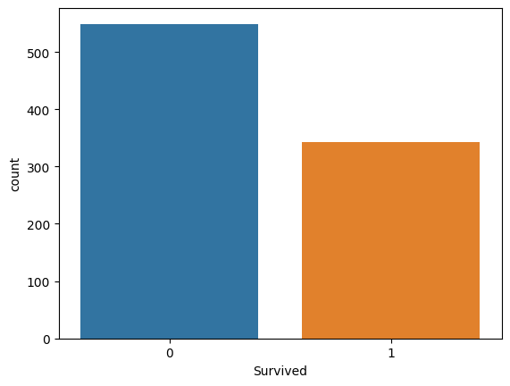
This graph denotes that the total number of deaths is over 500, and the number of survivors is over 340, totaling around 850 people (which is the actual size of the dataset).
Summary: More people died than survived.
sns.countplot(df,x="Pclass")
plt.show()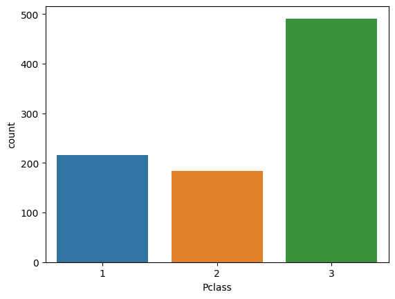
Graph Description: The majority of people traveled in 3rd class, while the least number of people traveled in 2nd class.
sns.countplot(df,x="Sex")
plt.show()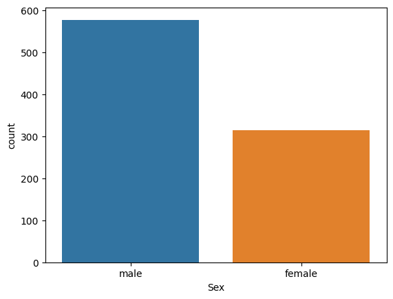
Graph Description: In the journey, the majority of people are male.
sns.countplot(df,x="Embarked")
plt.show()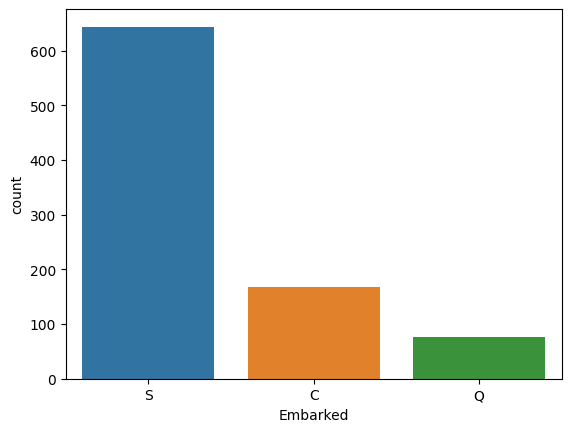
Graph Description: Most people departed from Southampton (S), followed by Cherbourg (C) and Queenstown (Q).
Pie Chart
A pie chart is ideal for displaying categorical data in percentages, dividing a circle into sectors to represent proportions visually. It effectively showcases relative proportions within a dataset and is easy to understand.
df['Survived'].value_counts().plot(kind='pie',autopct="%.2f")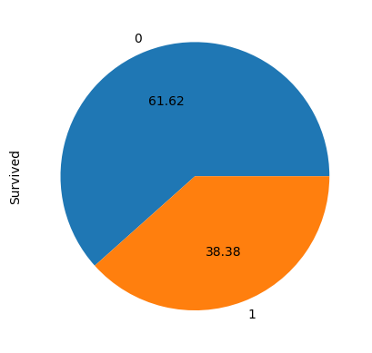
df['Embarked'].value_counts().plot(kind='pie',autopct="%.2f")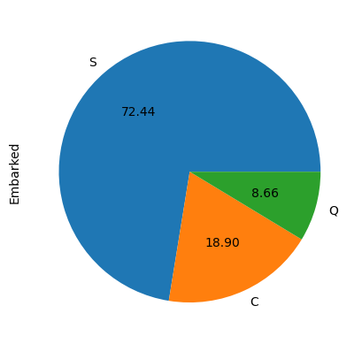
Numerical Data
Histogram
A histogram is used to analyze the distribution of continuous data. It provides insights into how data is spread across different ranges or bins, aiding in understanding its central tendency and variability. While histograms are typically used for continuous data, they can also be adapted to represent categorical data by grouping values into intervals.
plt.hist(df['Age'],bins=15)(array([ 44., 24., 32., 104., 115., 127., 80., 59., 49., 30., 22.,
17., 4., 6., 1.]),
array([ 0.42 , 5.72533333, 11.03066667, 16.336 , 21.64133333,
26.94666667, 32.252 , 37.55733333, 42.86266667, 48.168 ,
53.47333333, 58.77866667, 64.084 , 69.38933333, 74.69466667,
80. ]),
<BarContainer object of 15 artists>)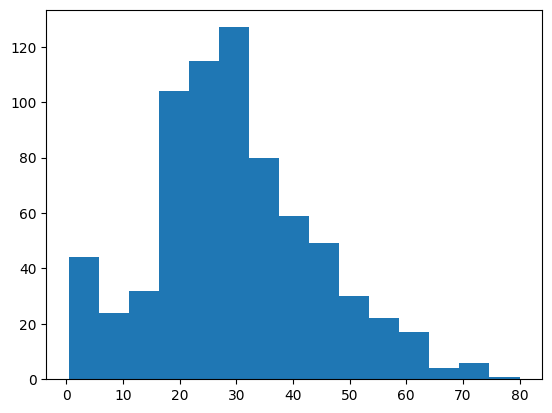
From this graph, we can see that individuals aged between 18 and 32 are the most frequent travelers on the ship. The age distribution ranges from a minimum of 0 to a maximum of 80, with data divided into 15 bins.
distplot/Histplot
This plot displays the probability density function rather than the total count, as seen in a traditional histogram. It provides a visual representation of the distribution of data, focusing on the probability of occurrence for different values rather than their frequency.
sns.histplot(df['Age'],kde=True, stat="density")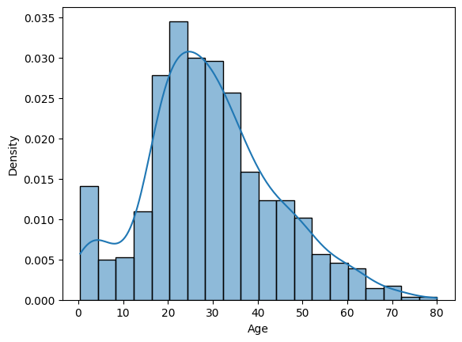
This graph illustrates the probability of specific ages. For instance, it answers questions like: What is the probability of being age 40? The answer is 0.015, indicating a 1.5% probability of being age 40.
Boxplot
A boxplot provides the five-number summary of a dataset: 1) Minimum: Represents the lowest value within the dataset, calculated as Q1 - 1.5 * IQR. 2) Interquartile Range (IQR): Measures the spread of the middle 50% of the data. 3) Q1 (25th Percentile): Represents the value below which 25% of the data falls. 4) Q3 (75th Percentile): Represents the value below which 75% of the data falls. 5) Maximum: Calculated as Q3 + 1.5 * IQR, it helps identify outliers or noise in the data.
Boxplots are valuable for visualizing the distribution of data and detecting outliers efficiently.
sns.boxplot(df['Age'])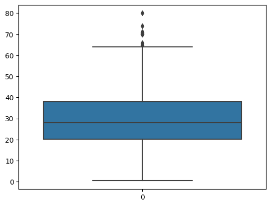
This graph aids in identifying outliers and determining the fifth number. For instance, ages above 65 are considered outliers. Additionally:
- 75% of people are below the age of 38.
- 50% of people are below the age of 28.
- 25% of people are below the age of 20.
# This can be verify by using this methods
df['Age'].describe()count 714.000000
mean 29.699118
std 14.526497
min 0.420000
25% 20.125000
50% 28.000000
75% 38.000000
max 80.000000
Name: Age, dtype: float64Extra for Numerical
Violin Plots
Violin plots are a method of plotting numeric data and can be considered a combination of the box plot and kernel density plot.
One advantage of the violin plot over the box plot is that, aside from displaying the five-number summary, it shows the entire distribution of the data. This allows for a more comprehensive understanding of the data distribution and facilitates comparison of the distribution of a given variable across different categories.
sns.violinplot(df['Age'])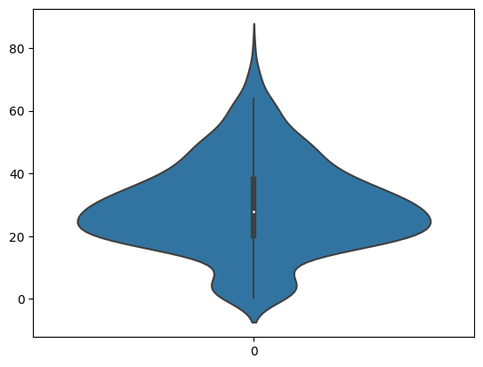
df.head()| PassengerId | Survived | Pclass | Name | Sex | Age | SibSp | Parch | Ticket | Fare | Cabin | Embarked | |
|---|---|---|---|---|---|---|---|---|---|---|---|---|
| 0 | 1 | 0 | 3 | Braund, Mr. Owen Harris | male | 22.0 | 1 | 0 | A/5 21171 | 7.2500 | NaN | S |
| 1 | 2 | 1 | 1 | Cumings, Mrs. John Bradley (Florence Briggs Th... | female | 38.0 | 1 | 0 | PC 17599 | 71.2833 | C85 | C |
| 2 | 3 | 1 | 3 | Heikkinen, Miss. Laina | female | 26.0 | 0 | 0 | STON/O2. 3101282 | 7.9250 | NaN | S |
| 3 | 4 | 1 | 1 | Futrelle, Mrs. Jacques Heath (Lily May Peel) | female | 35.0 | 1 | 0 | 113803 | 53.1000 | C123 | S |
| 4 | 5 | 0 | 3 | Allen, Mr. William Henry | male | 35.0 | 0 | 0 | 373450 | 8.0500 | NaN | S |
sns.kdeplot(data=df,x='Age',hue='Sex')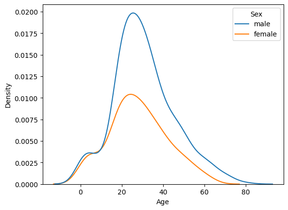
sns.kdeplot(data=df,x='Age',hue='Survived')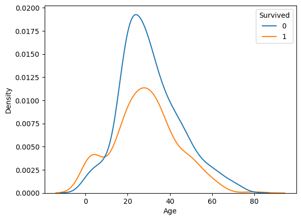